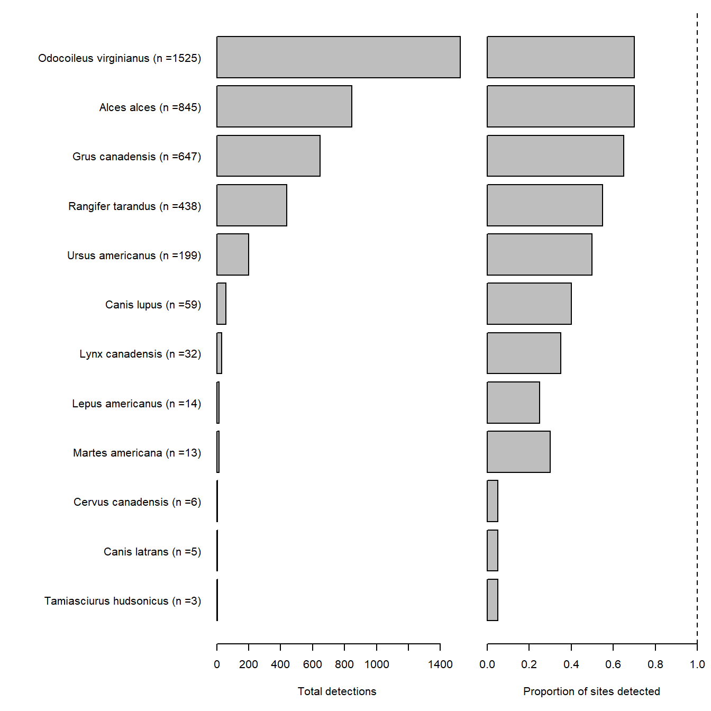
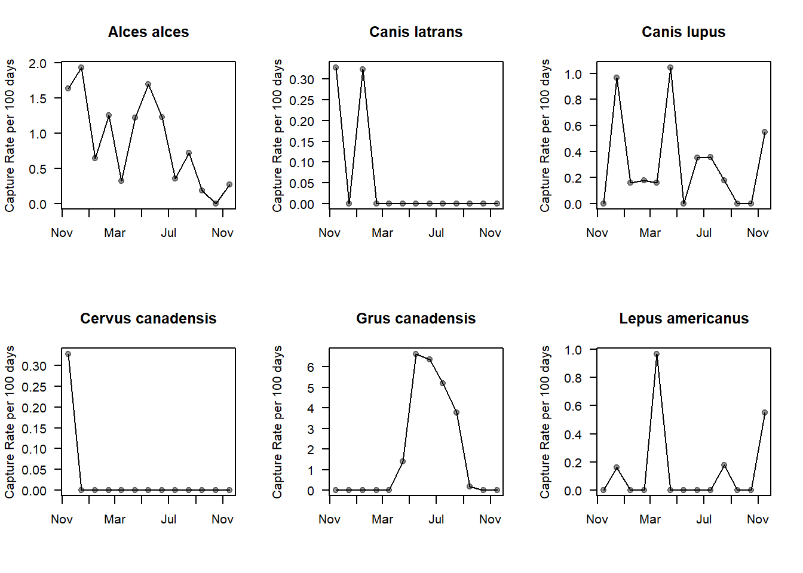
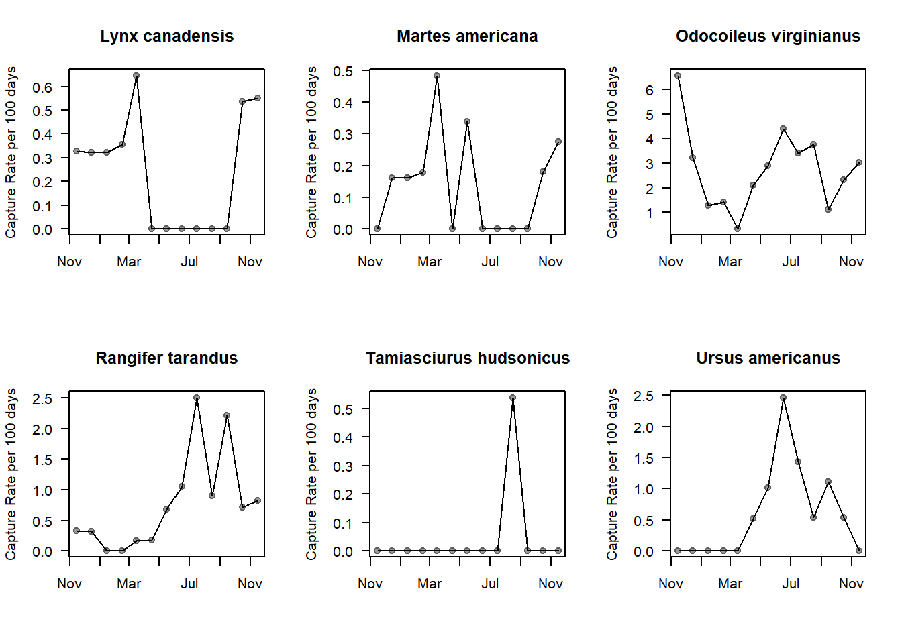

Chapter 3 Data Exploration
The most important part of analyzing camera trap data is exploring and checking your data.
Dynamic data exploration is key - check your data as you go. If you leave it to the end of your data collection and processing, the opportunity to correct mistakes early will be lost!
3.1 Standardised exploration script
In the Wildlife Coexistence lab we use a standardized R script to check the data generated by camera trap projects.
The most up to date script for exploring a single site is available on our GitHub page.
Below we run through the key plots and outputs this script generates.
3.1.1 Camera locations
A very common mistake in camera trap data sets is that stations are not where they are supposed to be! This is potentially arises where researchers manage their spatial data in a separate software (IE. ArcGIS) to their camera data (e.g. R). The safest way to check your data is to do it in one statistical environment… preferably R.
The `leaflet’ package provides some fantastic customization and interactive maps.
To date there have been camera deployments at 20 unique locations.
3.1.2 Camera activity
Undoubtedly the most common issue we see with camera data is issues with camera activity, with nonsensical dates or start and end dates frequent. We use the following plot to check if our cameras are active when we think they are:

Where black lines denote a camera which is active, white space indicates cameras which are inactive, grey vertical lines represent the 1st day of each month.
Raw camera detections
Raw detections represent the number of images which have a certain species label. Basic summaries about number of images of each species are often required for reports.
To date, there have been 3786 image classifications. Of these, 3786 are classified as blanks (0% of the total data set). Of the detections which have been identified, there are 12 different categories.

3.1.3 Detection check
The following plot helps you determine if you have detections occurring outside of the times cameras are active. Important note You can still get detections outside of the activity period if you have decided that the field of view was shifted and the data is uncompariable to that which was collected earlier.

3.1.4 Species metadata
As you progress with image labeling, it is important to check that the additional information you are collecting is consistent across species. In our case, we often try to record the sex, age class and behavior of detected wildlife (where identifiable).
Of the images classified as containing animals, the proportion of photographs assigned to the following categories are as follows:
Sex

Age

Behaviour

3.1.5 Independent camera detections
We rarely analyse raw camera data, rather we filter out multiple detections of the same individual within a given event. This is called creating and “independent detections” dataframe.
Using an independence threshold of 30 minutes, the number of detections is reduced to 539. The rest of the analyses are conducted with this data. The summary of detections is as follows:

** Group size distribution**

Site-level species covariance
This plot shows the co variance between different species at the site level for species with >5 unique detections. For example, if you typically get lots of caribou and bears at the same site, they will have positive co variance. If you get caribou where you don’t get bears, they will have negative co variance.

3.1.6 Detection rates
We calculate the detection rates of species to make site-level temporal trends comparable through time where sampling effect is not constant (a common issue in camera trap data sets).
Note, when calculating relative abundance, we use the minimum group size column.
** Site-level temporal plots **
Across all sites and species:

** Species-specific temporal trends**
Species level variation in monthly capture rates are as follows:

3.1.7 Data exporting for analysis
Finally, this script outputs 10 useful data frames for future data analysis:
- A data frame of “independent detections” at the 30 minute threshold you specified at the start:
- “data/processed_data/Algar_30min_Independent.csv”
- The “effort lookup” which is a dataframe of all days a given camera station was active. Some people use an effort matrix for this step, but we find the long format is much easier to use in downstream analysis.
- “data/processed_data/Algar_daily_effort_lookup.csv”
3 & 4: A ‘site x species’ matrix of the number of independent detections and species counts across the full study period:
“data/processed_data/Algar_30min_Independent_total_observations.csv”
“data/processed_data/Algar_30min_Independent_total_counts.csv”
5 & 6: A ‘site_month x species’ matrix of the number of independent detections and species counts across for each month in the study period:
“data/processed_data/Algar_30min_Monthly_total_observations.csv”
“data/processed_data/Algar_30min_Monthly_total_counts.csv”
7 & 8: A ‘site_week x species’ matrix of the number of independent detections and species counts across for each week in the study period:
“data/processed_data/Algar_30min_Weekly_total_observations.csv”
“data/processed_data/Algar_30min_Weekly_total_counts.csv”
9 & 10: A ‘site_day x species’ matrix of the number of independent detections and species counts across for each day a station was active in the study period:
“data/processed_data/Algar_30min_Daily_total_observations.csv”
“data/processed_data/Algar_30min_Daily_total_counts.csv”
Final data check
Finally, as a last check that our code is creating robust analysis data frames, we check if the observations/counts are the same across each temporal scale (total/monthly/weekly/daily). Check this using the following tables.
Observations| Time | Effort | Alces alces | Canis latrans | Canis lupus | Cervus canadensis | Grus canadensis | Lepus americanus | Lynx canadensis | Martes americana | Odocoileus virginianus | Rangifer tarandus | Tamiasciurus hudsonicus | Ursus americanus |
|---|---|---|---|---|---|---|---|---|---|---|---|---|---|
| Total | 7033 | 62 | 3 | 22 | 1 | 134 | 10 | 16 | 10 | 182 | 53 | 3 | 43 |
| Monthly | 7033 | 62 | 3 | 22 | 1 | 134 | 10 | 16 | 10 | 182 | 53 | 3 | 43 |
| Weekly | 7033 | 62 | 3 | 22 | 1 | 134 | 10 | 16 | 10 | 182 | 53 | 3 | 43 |
| Daily | 7033 | 62 | 3 | 22 | 1 | 134 | 10 | 16 | 10 | 182 | 53 | 3 | 43 |
| Time | Effort | Alces alces | Canis latrans | Canis lupus | Cervus canadensis | Grus canadensis | Lepus americanus | Lynx canadensis | Martes americana | Odocoileus virginianus | Rangifer tarandus | Tamiasciurus hudsonicus | Ursus americanus |
|---|---|---|---|---|---|---|---|---|---|---|---|---|---|
| Total | 7033 | 81 | 3 | 31 | 1 | 251 | 10 | 16 | 10 | 225 | 65 | 3 | 53 |
| Monthly | 7033 | 81 | 3 | 31 | 1 | 251 | 10 | 16 | 10 | 225 | 65 | 3 | 53 |
| Weekly | 7033 | 81 | 3 | 31 | 1 | 251 | 10 | 16 | 10 | 225 | 65 | 3 | 53 |
| Daily | 7033 | 81 | 3 | 31 | 1 | 251 | 10 | 16 | 10 | 225 | 65 | 3 | 53 |